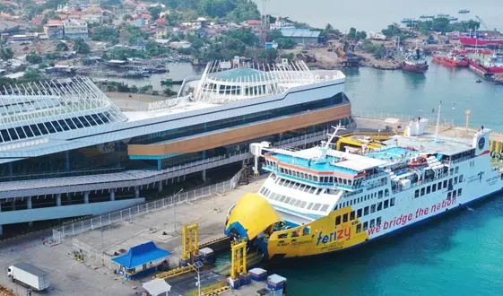
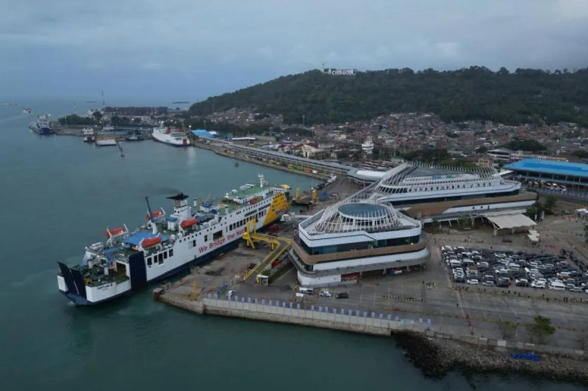
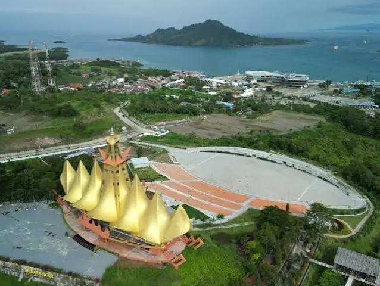
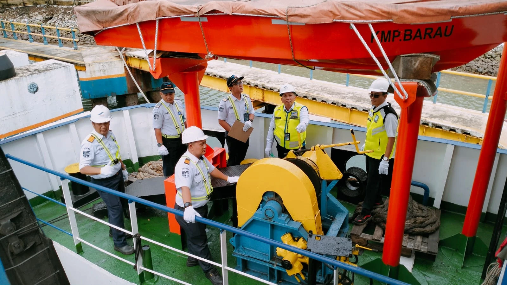
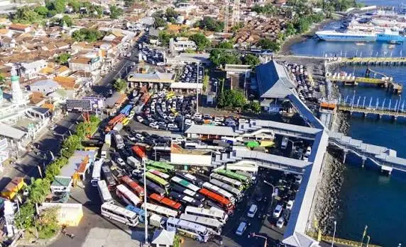
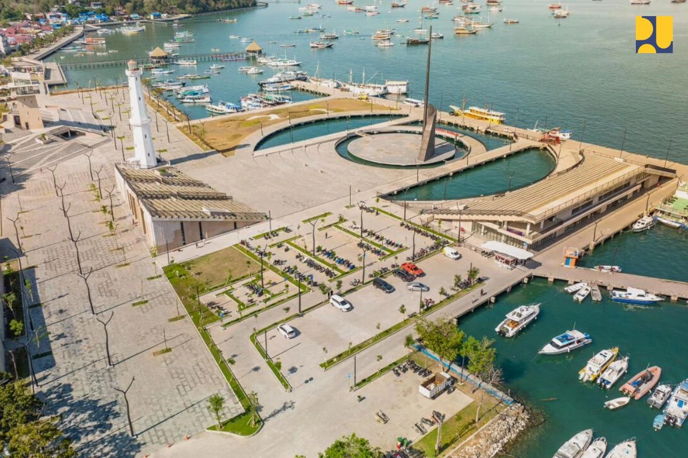

Armada Ferry Express Lintasan Selat Sunda

Aktivitas Sandar Kapal di Dermaga Utama

Kawasan Wisata Pesisir Bakauheni Harbour City

Standar Navigasi & Keselamatan Pelayaran Modern

Penyeberangan Ketapang – Gilimanuk

Dermaga Marina Terintegrasi Labuan Bajo